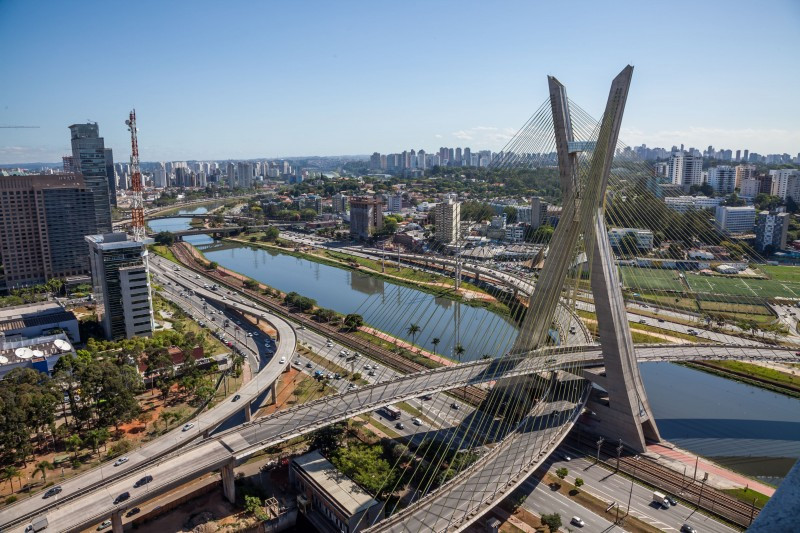

Punti turistici da non perdere in Brasile
1. Rio de Janeiro
Simboleggiata dalla statua del Cristo Re – il Cristo Redentor – che svetta sul Corcovado, Rio de Janeiro si affaccia sulla baia di Guanabara, nota per essere una delle più scenografiche al mondo. Il panorama è formato da una serie di colline rocciose a picco sul mare, fra cui spicca il celebre Pan di Zucchero. Tutto intorno luccicano spiagge favolose, ritmate da un'intensa movida. La seconda città del Brasile è popolata da una sconfinata selva di grattacieli: inaspettatamente, nel cuore urbano di Rio de Janeiro sorge Tijuca, un grande parco nazionale che vanta il primato di foresta urbana più grande del pianeta. A richiamare i turisti sono i paesaggi favolosi, i leggendari chiringuitos di Copacabana e Ipanema e, naturalmente, il Carnevale: trionfo dei colori, del ritmo e dell'energia della samba.
2. Copacabana

Fra gli emblemi di Rio de Janeiro rientra, indiscutibilmente, Copacabana, sinonimo di nightlife e gioia di vivere: questa lunghissima spiaggia bianca, circondata di grattacieli, si estende fra il Pan di Zucchero e il Forte de Copacabana ed è nota in tutto il mondo per la sua atmosfera vivace. Il lungomare è movimentato a tutte le ore del giorno e della notte, specie in occasione del Carnevale, quando milioni di persone vi riversano per ammirare i fuochi d'artificio e per lanciarsi in festeggiamenti non stop. Sotto i raggi del sole ci si scatena con partite di beach volley e beach soccer, o si sfreccia coi pattini sull'Avenida Atlantica, per poi rilassarsi nei locali con vista sull'Oceano: ogni scusa è buona per sperimentare l'atmosfera di questa celebre spiaggia metropolitana.
3. Recife
Recife sorge all'estremità nord-orientale del Brasile ed è soprannominata la Venezia brasiliana: oltre ad essere una delle città più popolose del Paese, si distingue per la ricchezza di monumenti e per la particolare fisionomia del suo territorio, plasmato da fiumi, lagune, ponti e isolette. Le lunghe spiagge urbane – come Praia di Boa Viagem – ricordano un po' Copacabana Beach per il contesto urbano e gli ampi spazi. Non ci sono solo i chiringuito: Recife è una destinazione decisamente interessante per gli amanti dell'arte e della cultura. Fra le tappe più significative c'è l'Oficina de Brennand, dove ammirare le opere del famoso scultore brasiliano Francisco Brennand: l'atelier, ricavato in una vecchia fabbrica di mattoni, assomiglia a una città sacra abbandonata, popolata da migliaia di opere in ceramica. Spostandosi di qualche decina di chilometri si incontra Porto de Galinhas, località balneare molto nota: le sue piscine naturali, create dalle correnti, sono una cornice eccezionale per un bagno in Brasile.
4. Lencois maranhenses
l paesaggi del Parco Nazionale Lençóis Maranhenses sono qualcosa che non si scorda facilmente: l'area protetta è formata da una distesa sconfinata di dune sabbiose, dal bianco abbagliante e dalla forma sempre mutevole. A scolpirle è il vento, ma anche la stagione delle piogge: in questo periodo, infatti, le precipitazioni creano uno scenografico sistema di lagune e stagni pluviali, adagiati su una base di roccia impermeabile. I cosiddetti lençóis – ovvero, “lenzuola”, nome dovuto al colore avorio e dall'andamento sinuoso delle dune – si elevano anche per decine di metri e si estendono su una superficie vastissima. Il Parco Nazionale Lençóis Maranhenses è, insomma, un deserto molto, molto particolare: le piogge, infatti, non mancano. Estremamente affascinante il contrasto fra il candore della sabbia e le meravigliose sfumature dell'acqua: lo scenario è decisamente irreale. Alcune lagune sono balneabili: difficile scegliere una piscina più bella.
5. Cascate dell'Iguazù

Le cascate dell'Iguazú si sviluppano prevalentemente in territorio argentino, “sconfinando” in Brasile: non è proprio questione di centimetri, visto che i due parchi – entrambi dichiarati patrimonio dell'Umanità – comprendono qualcosa come 275 cascate, distribuite lungo il corso del fiume Iguazú. La parte brasiliana si trova nello Stato del Paraná: il confine è segnato dalla Garganta del Diablo, uno spettacolo indescrivibile. Contemplando la vastità di questa gola e la forza dell'acqua si ha una rappresentazione perfetta del senso del sublime.
6. Foresta amazzonica
La foresta amazzonica è l'ultima foresta primigenia del mondo: la sua straordinaria biodiversità ne fa un tesoro di inestimabile valore. Attraversata dal Rio delle Amazzoni, è una giungla sconfinata con un ricco sottobosco e una straordinaria varietà di specie vegetali che spazia dalle felci giganti alle foreste di mangrovie. È, in sintesi, un autentico museo vivente, popolato di scimmie, caimani, bradipi, anaconde e giaguari. Oltre a essere un'esperienza memorabile, un'escursione nella foresta pluviale è un'occasione per cogliere l'importanza di questo immenso polmone verde e per prendere coscienza dei rischi legati alla deforestazione. Due i principali punti d'accesso per i turisti: Manaus e Belém, le città più importanti della regione amazzonica.
7. San Paolo
San Paolo – São Paulo in portoghese – è la città con più abitanti del Brasile e fra le più popolose al mondo. È una metropoli dominata dai contrasti: i centri finanziari e le favelas, i grattacieli di lusso e i graffiti convivono in un singolare intreccio. Un tour nella street art è solo uno degli itinerari possibili in questa immensa città, capitale dello stato omonimo, senza tralasciare i percorsi più classici. La visita non può tralasciare l'Avenida Paulista, fra le principali arterie cittadine, fiancheggiata da palazzi direzionali e lungo la quale sorgeil MASP, il Museo d'Arte: il centro espositivo ospita una delle collezioni più importanti del Sud America, con opere di Mantegna, Picasso, Dalì fra gli altri e un'ampia raccolta di capolavori dell'Impressionismo e del Post-impressionismo. Gli amanti dell'arte non possono rinunciare ad esplorare la Pinacoteca di Stato, dove si spazia tra migliaia di opere. Fra i simboli architettonici di São Paulo ci sono poi il Mercado Municipal, dove fare un po' di shopping, e la cattedrale metropolitana, fra le più grandi chiese gotiche al mondo. Lo sfondo perfetto per una passeggiata nel verde? Il parco Ibirapuera, un po' l'analogo di Central Park a New York: oltre a fare attività fisica, vi si ammirano interessanti palazzi storici e musei. Per gli appassionati di verde, il Giardino Botanico di San Paolo è una piacevolissima sorpresa: è la fuga perfetta dal grigiore, fra tucani, palme e ninfee.
8. Buzios
Anche detta la “Saint Tropez brasiliana”, Buzios – o meglio, Armação dos Búzios – si è affermata a partire dagli anni Sessanta, anche grazie alla presenza di Brigitte Bardot. Negli anni, questo villaggio di pescatori si è trasformato in una meta turista d'élite, con strutture ricettive di lusso e spiagge esclusive. Sono fra le più amate dai surfisti, come nel caso della Spiaggia Brava, così chiamata per le sue onde selvagge: in alternativa, ci si può sollazzare in uno dei beach club più esclusivi della zona. Oltre al surf si possono praticare il kayak, le immersioni, la vela, il golf e tantissime altre attività. Non mancano gioielli più tranquilli, come Praia Foca, caratterizzata da piccole piscine naturali che si formano fra le rocce e perfetta per gli amanti dello snorkeling. Oltre a richiamare una clientela selezionata coi suoi ottimi servizi, Buzios è una meta di riferimento per i cultori dell'eco-turismo: immersa in una rigogliosa vegetazione, è circondata da fantastici itinerari naturalistici.
9. Arcipelago Fernando de Noronha

Distante oltre 300 chilometri dalle coste del Brasile, l'arcipelago Fernando de Noronha è composto da una ventina di isole che rappresentano la parte emersa di una catena montuosa sottomarina. L'isola principale è contornata da una miriade di scogli e minuscole isolette, caratterizzate da una grande biodiversità, anche a livello di fauna marina: l'arcipelago Fernando de Noronha è, non a caso, fra i siti più ricercati di tutto il Brasile per le immersioni subacquee. L'area protetta include spiagge semi deserte di impressionante bellezza: un vero paradiso per gli amanti degli sport acquatici.
10. Salvador de Bahia
Salvador De Bahia è considerata la città brasiliana dell'allegria. E' qui che è nata la capoeira, la famosa danza ritmata. Inoltre, è una delle località del Nord Est del Brasile più apprezzate dai turisti. E' stata la prima capitale del Brasile e il centro e punto di riferimento della Corona Portoghese nel Sud America. L'influenza portoghese si può notare soprattutto nel centro storico del Pelourinho, caratterizzato da case con facciate di colori accesi e vivaci e vari stili che vanno dal XVI al XVIII secolo. Dal 1985, la città è Patrimonio Storico dell'Umanità UNESCO, titolo dato con lo scopo di proteggere e preservare la valenza storica e architettonica di questa piccola perla. Tra le attrazioni da visitare assolutamente, oltre il quartiere Pelourinho, aggiungete alla vostra lista anche: l'Elevador Lacerada, un ascensore che collega la parte bassa della città alla parte alta, mostrando una bellissima vista su tutta la baia; il Mercado Modelo, il mercato dove potrete trovare di tutto, soprattutto oggetti caratteristici del luogo; Ponta Da Humaità, un punto panoramico dove anche i locali si riuniscono per ammirare il tramonto.